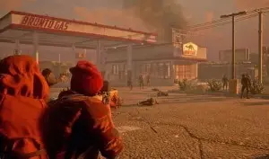

- Overview: *State of Decay 2* is an open-world survival horror game developed by Undead Labs and published by Microsoft Studios. Set in a post-apocalyptic world overrun by zombies, the game focuses on resource management, base building, and survival tactics. Players control a group of survivors and must scavenge for supplies, defend their home, and make tough decisions to ensure the group's survival. The game features both single-player and multiplayer modes, allowing for co-op play with friends.
- Developer: Undead Labs
- Publisher: Microsoft Studios
- Studio: Undead Labs
- Platform: Xbox One, Microsoft Windows, Xbox Game Pass
- Release Date: May 22, 2018
- Average Price: Around $29.99 (Price may vary based on platform and region)
- Ratings:
- Metacritic: 71/100 (Xbox One version)
- Steam: 77% Mostly Positive (based on user reviews)
- Important Features:
- Open-world gameplay where players explore large, dynamic environments filled with resources, zombies, and other survivors.
- Base building mechanics that allow players to construct and upgrade their home base, manage resources, and defend against zombie hordes.
- Character permadeath system, where characters can die permanently, adding stakes and tension to every decision.
- Multiplayer co-op mode where up to four players can team up to survive, complete missions, and build bases together.
- Diverse survivor characters, each with unique skills, traits, and personal backgrounds, which can impact gameplay and group dynamics.
- Multiple maps, each offering different challenges, environments, and objectives to keep the experience fresh.
- Frequent updates, including expansions and new content that expand the game world and introduce new mechanics.
- Criticisms:
- Some players find the combat mechanics repetitive and feel that the AI for both zombies and survivors could be improved.
- The early game can feel slow, with a heavy emphasis on grinding for resources and building up your base before significant progress can be made.
- Technical issues and occasional bugs that can affect gameplay, especially when playing in multiplayer mode.
- User Reviews: The game has generally positive reviews, with praise for the deep survival mechanics, base-building system, and co-op multiplayer. However, some players feel that the game's progression can be slow, and the repetitive nature of certain tasks may wear thin after a while.
- Sequel/Expansion: The game received several expansions, including *Heartland*, *Independence Pack*, and *State of Decay 2: Juggernaut Edition*, which added new maps, storylines, and gameplay mechanics. As of now, no official sequel has been announced, but the game continues to receive updates.
- Genre: Open-World, Survival, Action, Co-op Multiplayer
- Recommended for: Fans of survival games, zombie genres, and open-world experiences. It’s also ideal for players who enjoy cooperative gameplay and base-building mechanics, as well as those who l